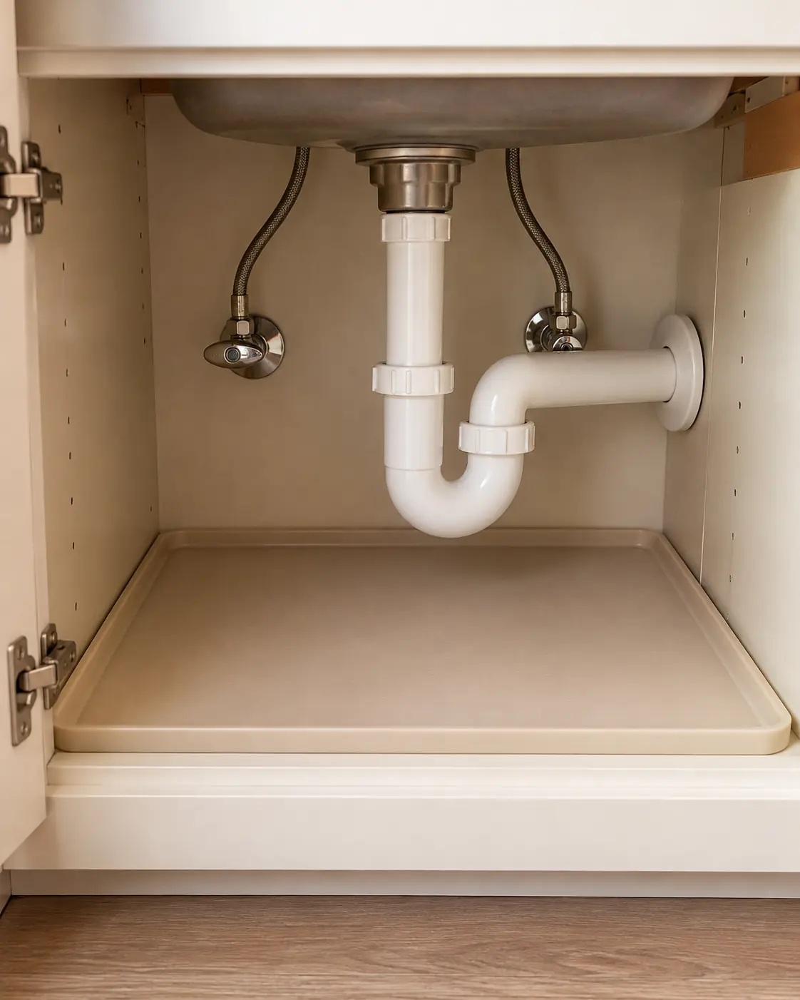

01
UNDER-SINK IDEA 01
Measure around the pipes first
Start with an empty, dry cabinet. Measure the usable width, depth and height on each side of the drain—not just the size of the door opening. Note the garbage disposal, shutoff valves, hinges and any hoses. Keep enough room to reach plumbing and remove an organizer if a repair is needed.
Before you buy: Check for drips or damp areas before arranging storage. Fix a leak rather than covering it with a mat. Sketch the clear areas on paper; this first step costs nothing.